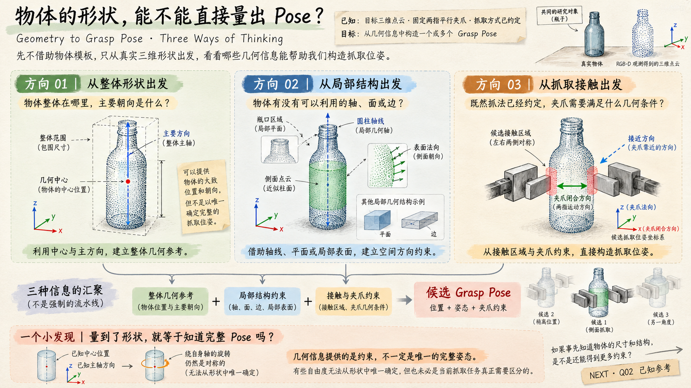
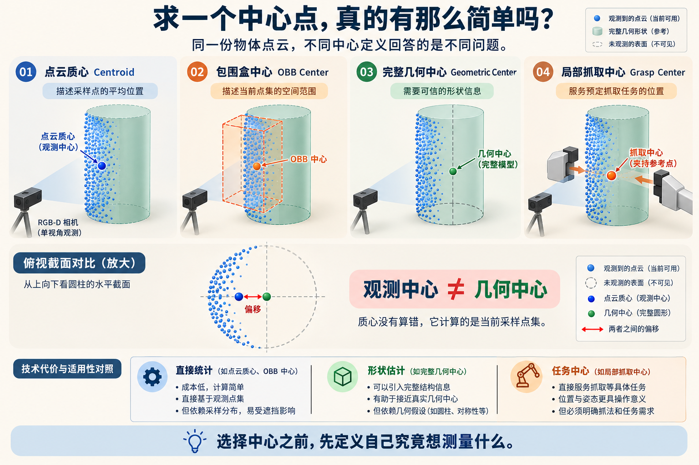
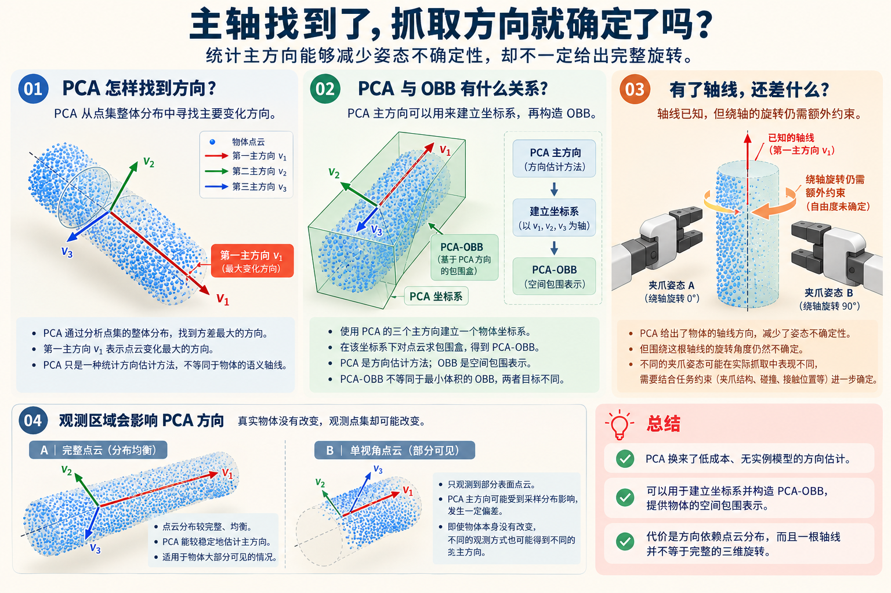
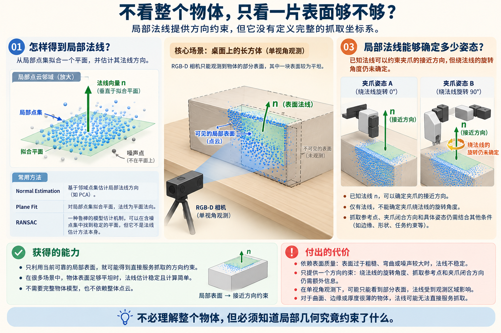
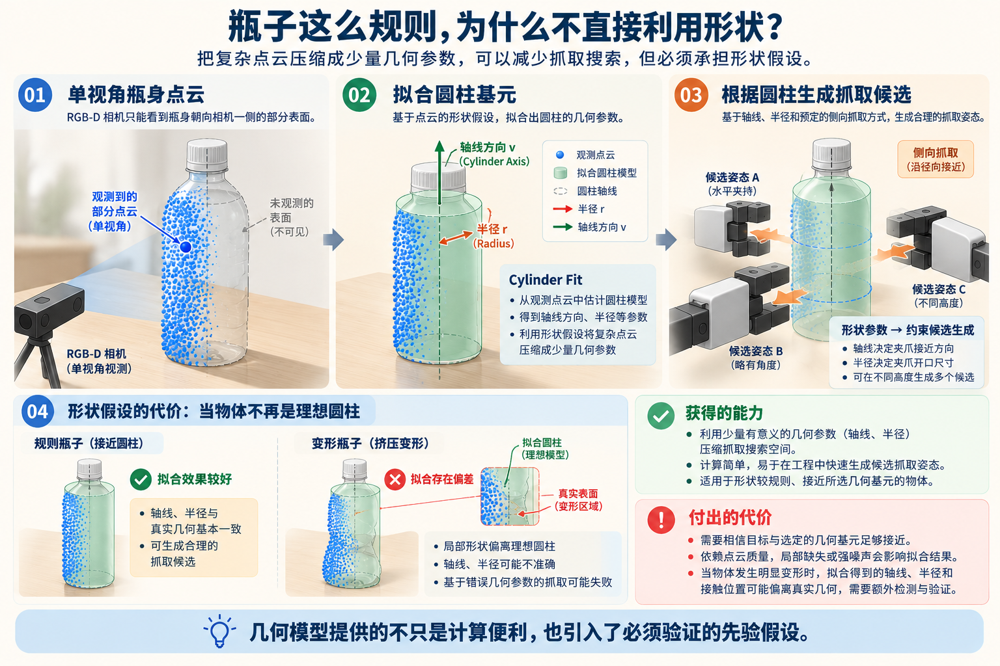
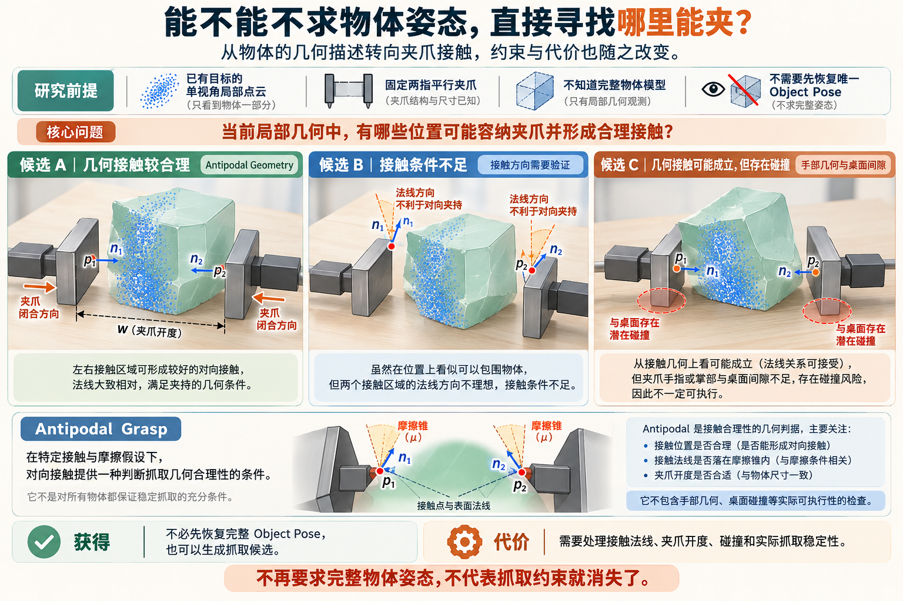
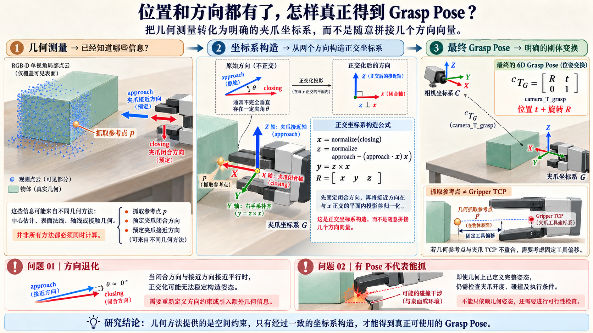

我们到底想从点云里得到什么？
已知目标点云和预定抓法，真正要输出的不是一份漂亮的三维重建，而是一个或多个有足够几何依据的夹爪位姿。回过头看，能利用的几何信息大致有三种切入方式。
中心、主轴、包围范围，或圆柱与盒体等形状参数。
从一片可见表面、边线或法线提取直接有用的约束。
围绕夹爪开度、接触对与空间占用直接构造抓取候选。
这三种不是先后升级的算法世代，也不是必须全部经过的流水线。它们在不同条件下可以独立使用，也可以互相补充。

先求个中心，应该挺好吧？
拿到一份目标点云，我的第一反应其实很直接：把 XYZ 坐标取平均，得到一个参考位置；再配上预先约定的夹爪方向，不就有机会完成一次抓取了吗？
先别急着否定它。对于摆放稳定、抓取区域与可见点集中心接近的物体，这个方案计算轻、参数少、很容易构造第一个可验证的抓取基线。
统计所有观测点的平均位置。PCL 提供现成实现；如果担心异常点，还可以继续研究坐标中位数、几何中位数以及经典的 Weiszfeld 迭代方法。它们优化的不是同一件事。
再把相机移动到瓶子的另一侧，就可能发现问题：单视角深度看到的只是朝向相机的一部分表面。点云质心可能随着可见区域变化，而不是稳定地落在物体真正想抓的地方。 抗离群点方法能减轻极端噪声影响，却不能自动补出看不到的背面。

低成本获得一个稳定定义的点集统计参考；配合固定抓法，可以迅速形成可跑通的基线。
默认观测中心足够接近抓取位置；遮挡、采样密度与目标形状变化，都可能破坏这个关系。
只需要粗抓取位置、物体摆放规律又可靠时，先试质心。 需要物体几何中心时，就该考虑包围盒或形状拟合；担心离群点时，才考虑稳健统计量，不要把它们混成一种“高级中心”。
中心有了，再给它补一个方向
如果是一只横放的瓶子，光知道中心还不够。最自然的想法是沿着瓶身找一根主轴，用它定义夹爪的部分朝向。
对中心化点集计算协方差与特征向量，可以得到正交主方向。PCA-OBB 沿这些方向统计边界；最小体积 OBB 则以更紧凑的包围体积为目标，不应该把两者当成同一种算法。
对于明显细长的点云，这条主轴很有意义。但如果只看到了盒子的一侧，或者物体本身高度对称，PCA 的主要方向可能来自采样分布，而不是实际结构。即使量到圆柱轴线，绕这根轴线的旋转也可能仍然无法由几何唯一确定。

从不依赖物体类别的点集统计中获得方向和包围范围，适合具有明显长短比例的目标。
方向依赖当前采样分布；特征值接近时会退化，主轴的正负号及剩余旋转仍需额外约束。
点云整体形状足够稳定且有明确主方向时，PCA 值得先用。 目标有一条清楚的实体边线或圆柱轴线时，直接拟合需要的结构，可能比做全局 PCA 更符合抓取任务。
整体方向不够，那就看看局部表面
盒子的一片平面也许就能告诉我夹爪从哪里靠近。相比先估计整个物体的主轴，局部法线有时反而更直接。
局部法线通常可由邻域协方差的最小特征向量估计；RANSAC 通过模型假设与一致性判断来降低离群点影响，可用于拟合平面、直线等。一个在测局部方向，另一个在做鲁棒参数估计，两者可以组合，但不是同一层概念。
当表面足够平整、深度质量不错时，一片局部法线就能直接约束接近方向。但一片平面通常不能决定平面内的旋转，也不能单独告诉我夹爪具体应该夹在哪里。 法线的邻域尺度、朝向一致性和噪声都会影响结果。

不必假定完整物体的形状，直接使用当前看得见、测得准的表面。
法线受邻域、噪声与边缘影响；局部约束不完整，需要结合抓法或其他结构补足。
只需要可靠接近方向，而且局部面清晰时，优先用表面法线。 如果平面存在大量背景混入或离群点，再引入鲁棒拟合；不要因为用了 RANSAC 就默认整个位姿已经可靠。
瓶子这么规则，为什么不直接利用形状？
如果瓶身接近圆柱，我其实不需要每一个表面点都正确。估出圆柱轴线、半径，再选一个抓取高度，就可以提出很有意义的侧向夹持候选。
Miller 等人的研究将球体、圆柱、盒体等基元表示与抓取候选生成、GraspIt! 评价连接起来。它的价值是利用形状规律缩小搜索空间；并不意味着原论文已经实现了“单视角深度点云自动拟合并抓取”的完整流程。工程上可以另外借助 PCL 估计几何基元参数。
这种路线对规则瓶子和盒子很有吸引力：少量参数就能提供可解释的结构。但只要物体被挤压、严重遮挡或深度缺失，拟合模型也可能看起来很规整，却不再描述真实的接触几何。

利用已知形状规律，把大量未知点压缩为少量参数，减少候选姿态搜索。
依赖形状假设成立、可见区域足以拟合；基元拟合的残差小，也不保证接触真实可行。
规则结构明确时，圆柱、盒体等基元值得优先尝试。 一旦出现明显变形或深度缺陷，就应该降低对整体模型的信任，转而保留局部可验证的信息。
能不能直接寻找哪里能夹？
到这里，我开始怀疑：最终要的明明是一只夹爪的姿态，为什么一定要先构造完整的物体坐标系？也许从接触区域和夹爪尺寸出发更直接。
把点云与夹爪几何一起考虑：先依据局部几何提出手部候选配置，再利用与 Antipodal Grasp 相关的条件和学习式分类器评价候选。几何提出候选不等于完整系统完全不使用学习。
这条路线减少了对完整 Object Pose 和实例模型的要求，适合关注未知物体的直接抓取。但“看上去两边可以夹住”不是完整的抓取稳定性证明：隐藏的接触面、摩擦、指尖厚度、环境碰撞都可能决定最终成败。

直接生成多组夹爪候选，减少对完整模型和物体统一坐标系的依赖。
候选评分更难，隐藏表面和摩擦不可直接测得；夹爪几何与碰撞筛选必须认真对待。
整体形状难以拟合、但局部可见接触结构还可利用时，值得转向局部候选。 如果目标贴地或薄得无法让两指进入，换更复杂的采样也未必能创造抓取空间。
几何信息都有了，Pose 怎么真正算出来？
这一步得从“我懂了几何”走到“机器人确实拿到了变换”。夹爪需要明确的参考点、接近方向、闭合方向和坐标系约定。
例如在本笔记约定夹爪 x 轴是闭合方向、z 轴是接近方向，先让两方向正交，再用右手系确定 y 轴，组成旋转矩阵 R；与平移 t 一起组成 4×4 刚体变换。此坐标定义只是示例，实际应以夹爪 TCP 定义为准。
有些抓法可以直接从中心、法线与任务约定构造夹爪 Pose，不必先求出 Object Pose。但如果方向几乎平行，正交化会退化；抓取参考点也不一定等于真实 TCP。算出了一个合法矩阵，只表示姿态定义完整，不代表它抓得稳或一定可执行。

真正把位置与方向约束组成可传给后续规划模块的候选 Grasp Pose。
必须处理方向退化、工具坐标约定、TCP 偏移及候选的实际几何有效性。
不强求完整 Object Pose，只要求约束足以定义任务所需的夹爪姿态。 无法唯一确定时，可以保留多个候选；但每个候选都需要明确的坐标系和基本验证。
这些办法没有谁淘汰谁，只是交换了不同的条件
从最初一个点，到主轴、平面、形状基元、接触候选，真正值得留下的不是六个新名词，而是：每条路线依赖什么事实，换来什么能力，又把哪部分困难留给下一步。
| 当我有这些条件 | 先考虑什么 | 最需要警惕的代价 |
|---|---|---|
| 摆放规则、抓法固定 | 中心 + 预设姿态 | 可见点云中心 ≠ 真实抓取中心 |
| 点云有明显延伸方向 | PCA / 轴线 / OBB | 统计主方向可能不等于真实结构方向 |
| 局部表面稳定 | 法线 / 平面拟合 | 只能约束部分旋转，位置与平面内方向还需补充 |
| 几何形状近似规则 | 圆柱 / 盒体等基元 | 形状假设一旦不成立，拟合可能给出误导性参数 |
| 整体形状不可靠、但接触区域可见 | 局部抓取候选 | 接触质量、摩擦和碰撞比 Object Pose 更难判断 |
以后遇到新物体，我会先问这四件事
是一个粗略抓取位置、一根轴线、一片接近面，还是完整的夹爪 6D Pose？先定义目标，避免过度求解。
完整度、深度缺陷、表面结构、离群点和遮挡，决定了什么信息真实可用。
固定摆放、规则形状、稳定局部平面、接触模型——每一个简化都有适用边界。
姿态构造、接触可信度和碰撞检查是不同问题；不要把一种算法的成功误当成整个抓取任务已经解决。
不是方法越复杂越好，而是约束刚好够用。
这样再看规则瓶子、盒体、变形物体和贴地薄片，首先考虑的就不再是“该套哪个算法”，而是观察条件与抓取目标之间的差距。技术的局限不是它的失败，而是我们选择它时必须清楚的边界。
六篇独立探索笔记
这一页只留下真正能帮助判断路线的研究认识。具体原理、代表论文、前人做过的改进、工程实现和待验证问题，都可以进入下一层继续查阅。
图 01–07 已预留图片路径。把对应 PNG 放入当前 Q01 的 images/ 文件夹，页面会自动显示图片并收起占位提示。未做过的实验不应写成已经验证的结果。